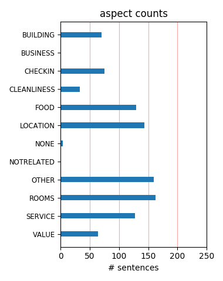
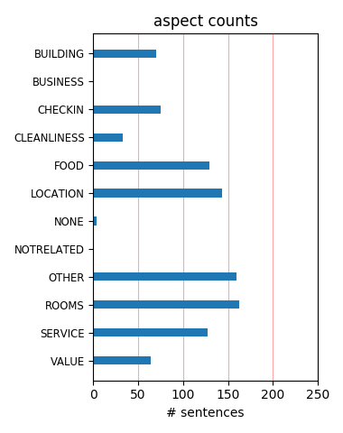

The hotel was in the middle of a renovation, so sometimes the elevator didn't work. But the staff was very friendly and always took us up in the 'construction' elevator. The breakfast there was wonderful. We did not eat dinner there, however, as it was very expensive.
The stay and service was as good as expected with an hotel from this level. Looked good, felt good, was good. Especcially as platinum member, it felt good to be there. Only, the bill in the hotelbar was a bit (unexpted) high. But, was our own foult and worth it :-) Great!
We stayed at the beginning of June and it was a fantastic hotel, the staff could not have been more attentive. Only minor downside - my room faced one of the canals and was slightly noisy now and again, would suggest If you want a quiet room ask for a room overlooking the courtyard.
Pros: good location, impressive courtyard, courtious reception desk Cons: Concierge (both I dealt with) very rude and not at all helpful, rooms very dated in need of updating, Not worth the cost. I would stay around the corner at the Radisson SAS Hotel - much better experience overall.
Wonderful stay in the heart of Amsterdam! The restaurant serves amazing seafood, the bar is cosy and opens on a intimate garden. Service is elegant and friendly. There is a fireplace room next to the lobby where it is nice to relax and have a drink after walking around Amsterdam. We'll come back!
Very poor in every respect, bar closed early, barman had to look up how to make a cocktail, cold water in the shower, TV that didn't work - (I could do on). If you take advantage of one of the special offers you can expect a second rate service, a noisey room and staff who really don't want you to return.
Stayed in this hotel for a long weekend last year and it really was beautiful. Fantastic breakfasts! Had dinner in the restuarant and that was excellent also. Only down side was the bar was really smoky but then most of Amsterdam is! Would recommend the hotel but probably will not go back to Amsterdam as it was nice but i hate smoking!!
This is a great value,the staff are warm and welcoming,the rooms are wonderfully well-equipped,the breakfast is excellent,the location is perfect and the whole hotel is spotless. Everything was great, they had free wifi,a balcony,laundry service,breakfast included,and they were happy to help with whatever we needed.The hotel itself was very clean & comfortable.
Had an excellent stay. Have rarely encountered such service-oriented staff in The Netherlands. My room was spacious and well equipped. Location is perfect. You get the feel of life along the canals and it is an easy walking distance from key sights and shops, including the flower market. Did not try the restaurants. Yes, it is pricey but you do get a lot in return!
I stayed here for 3 days with my wife. The hotel is very good and the atmosphere is very nice. Very good service from the staff. Please don't do any rehabilitations in the bar area. That area is very good. I did not like the new rooms. To modern. The bed was VERY good. After a long day walk it was very nice to relax in the garden with one Duvel beer and a glas of wine.
I travel a lot and this is one of the best hotel in the world. Everything is perfect, staff, service and room. Location is just amazing, walking distance to a lot of major tourist destination. As an Accor card member, this is one on the only hotel where the card was recognized and acknowledge. Well do not hesitate, if you go to Amsterdam this is the place you want to stay.
We got this hotel at a last minute bargain, and I am glad we did. The room, although small (but not smaller than normal European hotel rooms), was very comfortable. The king-size bed was fantastic and I always enjoy a place that gives you a robe with the towels. Very convienent, right next to Dam Square and walkable from the Train Station. I would definitely stay here again.
Me and my wife stayed at this wonderful hotel for five days and loved it. Great atmosphere, beautiful architecture and even better service. This hotel can be recommended to everyone who is visiting Amsterdam. It is near al the big tourist attractions and the Central Station. The rooms are very comfortable and the interior is outstanding. This hotel has my vote for best hotel in Amsterdam!
Stayed at the Grand for 2 nights last weekend in a Junior Suite and could not fault it in any way. Location is great, on the edge of the red light district but lovely and peaceful. Staff were extremely helpful - nothing was too much trouble. Ate breakfast in the Cafe Roux and found it to be excellent value for money, with extremely attentive wating staff. Would definitely recommend this hotel.
Very nice hotel with very friendly staff. Clean, spacious rooms, nice bathrooms. They could have some more cushion on the pillow topper for the bed for my preference. The windows are not sound proofed. The door is not sound proofed at all. The location is said to be near Red Light district but it is actually far enough to not notice anything at all. There are often celebrities staying at this hotel.
We stayed for three nights in the Grand and couldn't have been more impressed. We had perfect peace and quiet in a lovely room overlooking the central courtyard (away from the front street which does border onto the more 'lively' red light district). The staff were friendly, spoke perfect English, and there was no effort spared to make our stay enjoyable and relaxing. A truly 5-star experience for us.
Close to the center of things but flanked by two quiet canals, Sofitel The Grand Amsterdam provides an excellent base for tourist or business traveler. The former Amsterdam city hall has become a luxurious hotel with an excellent seafood restaurant. It is an easy ten-minute walk from the train station and all the principal tourist stops are likewise easily accessible. The service is excellent, the rooms plush.
I stayed at this hotel for 3 nights with my wife, before a business trip to Germany. The location is perfect, everything is close to walk distance. The staff was Ok, just a few confused during my check-in, but everybody were gentle and polite. The room was a charm! There is a restaurant in the hotel (The Bridges) with a wonderful food, excellent staff and a good price. Definitely we recommend the Sofitel Amsterdam.
I've stayed at the Sofitel "The Grand Amsterdam" hotel a number of times and found it to be outstanding. The city center location is excellent while also being quite and just a little bit removed from the hustle and bustle. I've found the staff to be initially reserved but warm up quickly if you actual converse with them. NOTE: My stays were a few years ago so the Feb 2010 date was the earliest date in the review menu,
Very chic hotel, very well-placed near the main tourist sites and with very warm and friendly service, which you normally don't get in places like this. The design of the hotel is modern, cool and very trendy. The restaurant is superlative but very pricey. We had a breakfast there too, very expensive but incredibly rich both in quantity and diversity of food. The rooms were to die for. We loved it and can't wait to go back.
I was there with my wife for 3 days for a business meeting. Our room was above average. We were on the first floor next to the canal but the noise was acceptable. We ate in the dining room for breakfast and had catered lunches for our meetings, all of which were good. I liked the location which was certrally located. The internal garden next to and serviced by the bar was epically nice.I thought the staff was uniformaly friendly and attentive.
Booked room type (deluxe king) not available "due to construction" but only found out when we got to the room. Large cobweb in the room and stained grouting in shower area. Room service order delivered incorrectly. 7am alarm call received, waking us up, which we'd not requested! The hotel is in a very good location but so are many less expensive ones! Sofitel are off my list - this is meant to be one of their best and it's really not that good.
We stayed there for a weekend in August and it was amazing. We booked a superior double room but when we checked in, we were upgraded to a suite with a butler service. It was great, the butler helped us book a table at a restaurant, and answered every question that we had. The room was great as well. The massage in the hotel's spa can only be recommended! The location was great as well. I can only recommend this hotel and we will be staying there again when in Amsterdam
We loved this hotel, the entrance and the courtyard have been renovated beautifully. The decoration is trendy, cozy, romantic and elegant. The rooms are a nice size, the bathrooms renovated and are smart with nice amenities. Our room had its own Nespresso machine. The hotel is conveniently located and in walking distance to movies, galleries(- the Van Gogh is a must see! ) The staff is incredibly helpful and efficient! We would recommend this hotel to our family and friends.
Only a few steps away from the hustle and bustle around the Old Church and yet as quiet as a mansion in the countryside: That's the Amsterdam Grand Sofitel for you. It's so centrally located that you can actually walk from Amsterdam Centraal train station. Also some of the best restaurants are in close proximity. The hotel used to be a convent and later Amsterdam city hall. Don't miss the council hall, the mayor's office and the marriage chamber – they are all open to the public.
Great hotel, fabulous, courteous helpful staff and Guido the concierge among the best ever! Convenient central location, excellent restaurants. Beautiful building and rooms, immaculate, comfortable - Wow!! Only negative was that like most nicer European hotels, they expect you to eat a large and very expensive breakfast buffet. A la carte only available via room service. Great guest lounge on main floor with 2 complimentary computers (and free internet) for guest use was a nice plus.
The location is very central and the building (a former city hall) has a lot of potential. The rooms are terribly dated (the bathroom is just fine, typical Sofitel, but small: no separate shower). The spa is small, dark and very hot. The food at Café Roux is good but not outstanding. Breakfast is a decent buffet with average service and little attention to detail (e.g. wilted flowers in chipped vases on the tables). Given the rates they charge, the place should be completely renovated (which they plan to do).
We loved staying here. We realized it was a splurge, but it was worth it. Every aspect of our stay was wonderful. No one mentions the amazing exterior detailing of the hotel or the courtyard entry. Very charming. The Guest Services person, Zsa Zsa, went out of her way to greet us and treat us warmly. My only complaint is that is was several blocks from the nearest tram. The pool, although below ground level and small, is still lovely. I don't think it would be my choice with small children due to its sophistication.
This hotel is perfect in every way. It's location near Dam square. It's Cafe Roux restaurant ,buffet breakfast, housekeeping staff, front desk, concierge, bartender,etc. Our room was quite large. We were upgraded to a Jr. Suite upon arrival. Our every request was handled without any problems. My wife & I were celebrating our anniversary with the final two days in Amsterdam. I've become a Sofitel customer since staying here. They even arranged a fixed rate for our taxi returning to Schipol airport Bob C. Columbus Ohio
My favorite hotel in Amsterdam. This is a truly Grand hotel. It is within an easy walk from Centraal Station. 2 blocks to the Dam Square, many museums are walkable, the Anne Frank House and the Flower Market are also walkable. Bridges Restaurant within the hotel is excellent, particularly for seafood. They have a good wine list which includes a few selections from Holland as well. The central courtyard is delightful in warm months for dining or a drink. The lobby bar area is quiet, relaxing and has good selection of single malts.
just returned from the sofitel booked a surprise 50th birthday for my husband. hotel ,rooms, staff, and location were fantastic. the hotel staff were wonderful and made every effort to make our stay special. they presented my husband with a cake and domingo the waiter in the resturant was very hospitable and really nice guy, providing us with information of the city . thanks again to the sofitel we will be back. lorraine, mick robinson and john and lynne hewitt. ps domingo enjoy your friends wedding dont get to drunk you have to work the next day x
A great hotel for lots of money. The room we reserved was much smaller in person than on the website. On inspection we wanted to upgrade and pay. Reception gave us a suite at a reduced price which was very fair. The only odditiy: the hallway to the bathroom went up a half-step, then down then up again. A bit trying in the middle of the night. Also, breakfast was hugely expensive--$90/2 but extraordinary. Champagne and everything one could want. No chance for an egg and some toast--all $45.Otherwise, the location, staff, room and food were outstanding.
We stayed at this hotel for two nights, as my 40th birthday was on the 29th December. We had complimentary champagne upon arrival. The location is perfect for exploring beautiful Amsterdam and the staff were extremely helpful. We used the spa which was relaxing and therapeutic. We enjoyed champagne with the staff on the Thursday evening and tried some delicious cheese! Our room was comfy and was regularly tidied and freshened up. It was a birthday that I will always remember and I would love to return one day. Amsterdam is a fantastic and architecturally wonderful city.
The Sofitel is located right next to the RLD. Even in cold weather, it seemed to be a short walk from everything. We stayed in a suite that offered butler service. The service was outstanding. We have stayed at other top hotels/resorts (Four Seasons, Ritz) and this particular Sofitel location was up to snuff. Luis and Domingo went out of their way to help us out, as did the check-in staff. We also used the amenities (indoor pool) and my wife and her sister used the spa services. Great time! They also have working Macs with printers in the lobby area that came in really handy.
In many ways this is a lovely hotel in a great location but they do enough things wrong to mar your stay. Be wary of the front desk staff. They will either treat you with respect or contempt but you never know which it will be. The rooms are dated; the wall paper was peeling in mine and carpet had pulled away from the wall in many places. But the rooms are large (for Europe) and the bathroom was spotless. The pool and locker room were also clean and bright but if you book a massage you must pay in cash. Be prepared to sleep with earplugs. There is no other way to put it. The noise level is bad.
i visited this hotel with my girlfriend on June 2nd for 3 days and had a great great time! they upgraded us to the William suite and offered great service all around , i specially want to thank Mauricio and Domingo who were our butlers and were of great assistance , i cannot recommend this hotel enough , if you want to visit Amsterdam and want a genuine 5 star experience look no further. other perks are great location, and the best in room dining you can ever taste! try there daily chocolate dessert and the 4 cheese pizza! to top it all of they have a horse carriage downstairs that can take you anywhere!
Just back from a weekend at the The Grand with two other couples, the hotel itself is on a great site and very central. The rating is five star but is probably more like a very high four as some of the place is in need of a spruce up (its not in bad nick just not five star) however the staff more than made up for any slight shortfall with great service and lots of handy tips. The Sunday bruch is also a good way to come round after a heavy night with a great varied buffet and hair of the dog included in the price. If you have a Sofitel loyalty card the room upgrades a well worth it. We would go back again.
Location: Great!!! You are right in the center of Amsterdam, very close to red light district but set in a very secluded and quiet courtyard. Food: We only had room service while staying but food was very good. Service: The attitute of the staff was very helpful and efficient. The concierge was useful and helped out with museum tickets. Room: Managed to get upgraded from Deluxe room to Appartment. Room was large and clean. The decor was a bit dated but overall ok. The bed was great, very comfortable. Overall: Service was fast and efficient, Food was good and location was great. I would happily stay here again.
I have stayed two nights in a superior room at the Sofitel. I must say it is not as nice as other Sofitel. The room although 2 levels above Classic room is rather small and furnished ok, and not upscale. The first room that was assigned stunk chemical mized with smoke odors. I was changed for another room without much problem. I did not like the low pressure shower head and the price ( circa EUR 30-35) of the breakfast. The restaurant is not well lighted and the food is ok but not worth EUR30. I liked the location and the pool. In general, l think the room was overpriced (360/night) and the service good but not like with the other Sofitel.
So beautiful and modern and perfectly clean. Great place for travelers who like nothing but the best. The location was excellent, so close to everything, but beware, it is also very close to the red light district, so, if you may be offended by it, don't stay there or don't take a right once you leave the hotel. It didn't bother us at all so I didn't see it as a problem. The room we stayed was pretty small, but the bed was the most comfortable ever! the curtains were heavy and dark so you could relax and nap at any time of the day. The bathroom was large and very modern and the toiletries excellent. I may be going to other Sofitels around the world!
Amsterdam can be a bit rainy, which is to be expected, but on one of our days it was absolutely torrential all day. This is the perfect hotel to be as we never had to leave. we ventured out into the cold and rain for a bit, but came back to a spa visit and a little time in the sauna to warm up. Service here is definitely first rate, Gabrielle went out of our way upon check in (room was not ready) - but we had an upgrade to a junior suite and their IT person came by while we were waiting and hooked up our internet. From making dinner reservations to ensuring all our needs were met, this hotel met all of our needs. Central location and very easy to navigate from there.
Checked in to the hotel on Thursday, greeted by a host and a lovely Butler Domingo! We were celebrating our anniversary and were treated like a prince and princess! our luggage was misplaced so stress levels were up, but the butler chased this up regularly! We had a suite room which was outstanding with views of the canal, The bathroom was lovely, and the bedroom so romantic! Lovely size bed! Loved everything about the stay, hotel is a walk way from all the shops/rest and the staff are all so pleasant! We even got treated like VIP at the restaurant Domingo booked for us where we got a special table too! Loved it, want to do it al again! Thank you for the amazing stay!
My husband and I stayed here for 2 nights at the start of November 2011. The staff were wonderful, really helpful, friendly and couldn't do enough to help us. They parked my husband's beloved car in a safe location, hired us some bikes to potter about on and recommended a few night spots, which were fantastic. The hotel was luxurious, very nicely furnished and had a non stuffy atmosphere. We had a decent sized room overlooking the canal on the 1st floor, but it was really quiet and comfortable. However, the best things that make this hotel great, are the staff and its location. Would recommend it to tourists or business travellers, you definitely won't be disappointed.
We have been lucky and stayed in some great hotels over the years but our recent stay Sofitel The Grand was one of the best. From the moment we arrived the staff could not have done more to help every single person was excellent and really cared about making a difference to our stay. They fused over our little boy and made him feel welcome which is not always the reaction in hotels. The room was superb, big and comfortable with a great bathroom. Swimming pool was great and food both in room and in Bridges was great. Although not the cheapest hotel it was money well spent and good value. Would definitely recommend to anyone. It really is one of the best hotels in the world.
The hotel is in the centre of town so we walked to all the attractions that we wanted to see. The standard rooms are not big but the suitable for us. The used the hotel transfer to and from the airport which made everything very easy as we arrived at different times and no one had to organize money. The highlight of our stay was the concierge Mr Udo Eshuijs who organized medicine for our daughter who had asthma and needed a puffer. He organized the hotel doctor to send a script to the chemist and sent a taxi to collect it then delivered it to the room personally. He suggested various restaurants that were all great and made our stay memorable. If you stay please use his recommendations.
My husband and me booked an escapade, at promotional rates, got upgraded to an apartment suite! Although we didn't use the first floor, it was a nice touch! The location is great; although close to everything, walking distance from the train station, the Dam, the main places, it is an oasis of quiet, a chic ambiance. The hotel itself is worth seeing, with its colored glasses and reminiscences of distinguished guests from bygone times. We didn't try the facilities though, but what we saw was good enough. The service is excellent, (very untypical of the locals, unfortunately), from the reception staff, to Udo, the concierge who makes miracles, or Peter, the bell boy. Would go back, for sure!
Stayed here in September with three friends. I travel frequently and have stayed in a lot of hotels worldwide. This hotel had one of the best standard of bedrooms I have seen. The beds are amazingly comfortable. The bathrooms are incredibly modern with fantastic rain showers. It is close to the red light district but if you turned left out of the hotel then you may not have noticed. Staff were wonderful and attentive. The restaurant was a little short staffed during the breakfast which led to delays but there are few who would possibly want to pay for it. Although good, very expensive - even by hotel standards. Wonderful architecture and history to the building which I prefer to modern hotels.
Stayed at The Grand two nights in two connecting rooms (one king size bed for my wife and myself, second twin beds for our two kids). The location is just perfect, in the heart of Amsterdam at walking distance of main attractions. The Hotel itself is beautiful, an ancient historical building well renovated and decorated. The concierges were extremely helpful and caring. Rooms spacious and with VERY comfortable beds. Hotel facilities very good. Evevrything perfect.... One "negative" detail: we expected a much more "luxurious" breakfast buffet, the one we had was just fine.... We would definitely come back! AAA! Highly recommended. PS: the afternoon tea at bar, with scones and sandwiches is a total MUST!
This is definitely the best hotel I've stayed in in Amsterdam. We actually drove there from the UK, and the valet met us, and deposited our car in the garage - the parking was included in the price, so that was nice. The hotel was realyl plush, and you enter via a courtyard, so even if you walk past the hotel, you have no idea what it's like inside unless you go in. Lovely room, with opulent decor, overlooking a lovely courtyard at the rear of the hotel. Filled with lovely vegetation, it was nice to not be looking over the street, and gave a real feel of privacy. Great location, just moments from Dam Square, and the Red Light District. Not cheap, but so much nicer than staying anywhere else in the city!
My husband and I stayed for three nights in August and our overall impressions of the hotel were extremely favourable from the excellent location and impressive decor to the cleanliness of the room. Our only gripe was with the service, both in the bar and the restaurant when we had breakfast. It was painfully slow, and the waiting staff suffered from tunnel vision, ignoring our attempts to catch their attention. Someone needs to do a time and motion exercise to improve things - why have waitresses standing around doing nothing because (presumably) it is not in their remit to, for example, take your order but instead just to clear tables? That irritation aside, tho, I would not hesitate to stay at the hotel again.
We stayed here for only one night in the Easter weekend with three children. The service was excellent. Staff really went out of their way to make our stay enjoyable. The rooms were lovely decorated. The children were thrilled to find huge chocolate bunnies in their rooms. The restaurant was excellent. You need to book way ahead of time because it is often full. Breakfast was a bit chaotic not enough staff to keep up with everybody. We organized a small boat with captain from the hotel. A bit expensive but really worth seeing Amsterdam from a boat through the canals. It is a lovely hotel. Nicely decorated and quiet location. Unfortunately they were renovating the spa area so we could not try out the swimming pool.
We stayed at The Grand for 3 nights 02-05 August 2007. This hotel is in a terrific location, easy to reach the Dam Square, Central Station, etc. We did not experience any noise problems mentioned by others. Entering via the lovely entrance courtyard we felt somewhat removed from all of the crowds of people. Our room looked out on the canal but we were not affected by people walking by. Room was in good shape, not excellent, but certainly what you would expect from a 4 star hotel. Our only disappointment was the concierge staff. We felt they were indifferent to our rather simple (restaurants, sightseeing) requests. Other than that, we'd certainly return. We have previously stayed at the Amstel but liked the location of The Grand much better.
The hotel is centrally located, 10 minutes walk to the Central Station. But some locals got it mixed up with other Sofitel and it took us a while to find it. Although it is right next to the red light district, it is tucked away and is quiet and safe. It is close to most sight seeing places. The room is spacious, tastefully refurnished and well designed. The bathroom is simple, clean and contemporary. I am very fussy about bathroom and I was happy with this. But water leaked from the glass partition of the shower. The hotel is still undergoing some major renovation but it did not create any noise. They provided free internet at the business centre. The restaurant was a pleasant surprise. The food was nice and not too over priced. It is trully a five star hotel.
This has to be without doubt the worst experience I have every had at a 4 or 5 star hotel ( I would have been upset at a 3 star rating for this place). On arrival our room was not ready. Once we were introduced to our room it looked tired and dim with 2 twin beds (requested double/ king). The first night I was called by the reception at 2am because of a problem with my credit card (transpires operator error at the reception). Having travelled extensively around the world the 5 star rating is simply a joke! It seems it is some corrupt method of extracting more money from the unsuspecting public. I imagine their return occupancy rates to be me minimal if not non existent. I would wish you luck with this place but you would need more than look to enjoy this place!
This hotel must be the worst I have ever stayed in. It all started with check in, when I was given a room key to a room that was already occupied by others,... This was solved OK by the front office staff. I found the rooms to be tiny and extremely dark. Then we decided after a walk over the canals (make sure you don't turn right, because that's were the red light district is) to have dinner at the Bridges Restaurant. The service was again poor, with an arrogant hostess and so/so food. Breakfast was reasonably good, but then the great surprise came out upon check out; we were charged for minibar items that we never used (?!?) After complaining to this and speaking to the manager, this was waived. Will definitely not recommend this hotel to any of my friends or family.
My husband and I decided to stay here after an exhaustive search of the hotels in AMS. I ended up getting a great deal on the hotel website--295 Euros for a junior suite with breakfast included. The room was very large and overlooked the canal. The location in great--centrally located and easy to get to everything (although AMS is really not that big compared to London, etc...) . Location is very near red light district and there are some rather loud bars just down the street from the hotel. However, even with out room facing out toward the street, I really didn't hear them. The courtyard of the hotel was another plus--quiet and beautful. I also loved the historic backgroud of the hotel and enjoyed exploring some of the older meeting rooms. All in all--a great stay at the Grand!
I have stayed at most of the top hotels in Amsterdam and this is def. one of them! The location is good but it all depends on what you are doing in Amsterdam. Its very close to the red light district which can be a bit annoying if you are not into that because you will easily cross the red light district when walking around... Lobby is quite dark but the rooms are light and the bed are SUPER comfortable! Bed and Breakfast! This is not an B&B but its the best par of the hotel! The bed & the breakfast! Breakfast is really really good with a huge selection of fruit and FRESH juice! Also I think the restaurant has a michelin star or use to have, very good! Reason why I dont give the hotel 5 stars is value, Its very expensive and its not that good! I have a few hotels in Amsterdam I prefer over this.
This would be my choice for Amsterdam having stayed in most of the major hotels in this city over some 30 years. I must admit that I have yet to find a really good 5 star in this city. But it has a good location close to the Dam and about a 10 minute walk to the Central Station but it is a very, very touristy area. It needs, as of June 2007, some serious renovations in the rooms as they are slightly tired and could use an upgrade given it’s rating. Many different room type configurations, some better than others,so look at the room first. On the whole housekeeping is good as is room service, the Dutch breakfast in particular. On property restaurant is expensive and so so, nothing special, but there are any number of good eating establishments in the area, with my preference being for Indonesian.
We arrived on Thursday and were welcomed by the doorman. Checking was easy but we were not shown to our room and the presentation of the hotel services and facilities was all too brief. The room was a good size and well maintained and the housekeeper was always on hand to assist if necessary. We have no complaints regarding noise from either inside or outside the hotel in the evenings. Whilst having a quiet drink in the bar a mouse appeared around my girlfriends feet. This was reported to the barman and he joked that it was probably the cheeseboard that attracted it. We took an hours tour on the hotel boat which was very pleasant and we were lucky enough to be the only couple. A nice trip but no narrative from the skipper. On the whole very good but not sure the staff treat all guest alike perhaps.
I have stayed in many gorgeous hotels in the past, but this one beats most of them on many grounds: 1) it's in amsterdam! Old Europe, home of tiny houses, cramped hotel rooms, dark hallways.. Yet the grand is, well... Grand... Spacious, luxurious, airy, light.... The courtyard is gorgeous, the garden is peaceful, and the room was beautiful. 2) the service is something I had not had for a long time in Europe. I am not saying that european service is bad... No, just that Asian and middle eastern (read, dubai) service is just better... Well, the grand was definitely at par, with dubai... Except that it felt geniun...so actually better than dubai 3) location location location: perfect! 4) price: steep. But then again it's the Grand... If you can afford it, if u can smuggle it during a business trip... Do it!
We had the pleasure of staying at the Sofitel Grand Amsterdam and can say it was one of the best hotel stays we have ever experienced. Once you enter the grounds of the hotel, the crazy outside world just disappears.... The hotel itself is stunning. On check in you are shown to your room and the features of the room & hotel are explained to you. The compliementary dried fruits & syrup biscuits are a lovely touch. The nespresso coffee machine was also appreciated! The central courtyard of the hotel is a oasis, the perfect place to enjoy a glass of champagne. We had dinner at the restaurant, the menu is fish based and we completely enjoy both the food and the amibence. All the staff we spoke with were outstanding. The staff are extremely friendly yet professional, a perfect balance. We can not reccommend a stay a this Grand Hotel strongly enough!!!
Sofitel's renowned service in addition to Dutch hospitality have made our stay at this hotel a wonderful experience. The contrast of modern furnishing in a historical building dating back to the 1500s makes this hotel ideal for a romantic getaway. The guest relations manager greeted us from the lobby and escorted us to the room. The entire staff were eager to please us. The guest-staff get together on thursdays with flowing champagne glasses and finger foods is just one example of the warmth and hospitality you'll expect. Dam square is right across the corner and the red light district is a five minute walk away, making its location ideal regardless of what your idea of fun is. The beds were extremely comfortable and the view of the canal from the room was just perfect. I highly recommend this hotel to everyone and I would definitely stay there if I ever go to Amsterdam again.
Amsterdam is an interesting exciting place but i was a bit sceptical about the hotel choices as there weren't many options for 5 star luxury which i am fanatical about. However when we checked into this hotel we were pleasantly surprised. The location is amazing as it is a short walk to the red light district and other interesting hot spots. We stayed in a luxury room and it was furnished nicely, clean and comfortable. The bathroom was quiet large and also very nice. The view out the window was of another building so didnt get much out of that. We ordered a few times from room service and the food was quiet enjoyable. Had dinner once at the Bridges restaurant, the service was good and so was the food. The concierge service was average and overall we enjoyed our stay at the hotel. This is not the most luxurious 5 star hotel you will stay in but in Amsterdam i think this was the perfect choice.
Have just returned from a wonderful weekend at The Grand, what a truly wonderful Hotel. The staff are incredibly friendly and helpful, and we received impeccable service. The Bridges restaurant, I have to mention, is one of the finest restaurants I have dined in, the ambience, the decor, the food and staff all were amazing, i haven't checked, but if this restaurant doesn't have a Michelin star it, definitely requires several. Food from Te Raw bar is a MUST to sample, and the béarnaise sauce is to die for, alongside the entrcote steak !!!!!! I have to stop writing, as it is making me salivate..... I haven't had a weekend in amsterdam for a long time, this place makes we want to go again, i think I may well have just found one of my favourite places on earth........ Also the beds!!!!!!!soft, warm, a wonderful turn down at night, with slippers and chocolates, seriously, you must visit this place.........
this is a nice hotel which is going through a much needed renovation project. the bar has been closed and an obviously temporary one has been set up, though for a temporary bar it is very nice with good service. the room i was in was a good size and very clean though does need updating as it was a touch 80's esque. all the staff i encountered were very friendly and helpful when called upon.the spa is minimal but the pool is big enough so long as you dont have to share it with anyone else. in summary this is a hotel i have stayed at twice now and i feel i have experienced all that it has to offer, in saying that, i would not stay here again as i feel that twice is enough and i would like to experience other hotels in amsterdam but i would recommend it as it is a good hotel. oh...it is also in a great location just on the edge of the redlight district ,you feel, as indeed you are, bang in the middle of things.
My wife and I stayed at this hotel April 30- May 2. We got to the hotel at noon; check-in was 3 PM. Front desk finally gave us a room at 4:30 PM. The room they provided was on two levels Bed on lower level and bath and closet up 5 steps. Very challenging to maneuver around and use toilet at night. We spoke to many people and a lot of them got stuck with this type of room. Breakfast was included and dining room was disorganized. You had to hail servers to get tea, coffee or hot food. Cold food was buffet. Quality was good but a pain to constantly get someone to bring hot items. This is a big hotel in an old building which could not be renovated sufficiently to keep old world charm with modern conveniences. The service in this hotel is poor, the rates high and they are disorganized. My wife and I are from USA and a fellow guest from Germany commented about the many quality problems at this hotel. I would avoid this hotel even if they offered a great rate.
My stay at the Grand Sofitel Demeure for 4 nights in July, 2006 was excellent. I paid 295 euros as a summer rate for a spacious junior suite on the courtyard. Clean and well maintained. Very quiet except for muffled early evening conversations from outdoor diners in the courtyard. Top location on a quiet street only a couple of blocks from the Dam. Secluded feeling. Intimate atmosphere. No smoking rooms. Four computers in business center for free internet access. Superb dinners in wonderful courtyard during the summer--expensive, but worth the price. Very good breakfast buffet. Friendly and efficient staff. I prefer to the Pulitzer and L'Europe. Don't confuse with the other Sofitel in Amsterdam that is closer to the train station. Only defect was thermostat that had to be turned on or off manually--strong and effective air conditioning, but never turned off except by a flip of the switch. Probably a quirk of my room. An elegant and very satisfying hotel.
The beds at The Grand are actually like sleeping on cloud. As a couple who sleep on a Tempurpedic in the US, this bed is ten times more comfortable. Incredible sleeping on this lovely feather bed with a feather duvet. The service is impeccable and I'm sure they would cheerfully scrape gum off the sole of my shoe had I asked. Every detail was attended to and the turn-down service included the most incredible chocolate truffles I've ever had! it's right on the canal and just a block from the boat tours, and the neighborhood where you can walk all day to see the lovely touristy shops or the high end shopping district. The Grand keeps taxis on hand for a ride at a moments notice. This place has a historic history and the breakfast buffet was delicious. We're American so they made lovely scrambled eggs from scratch and there were plenty of meats, cheeses, fresh fruit, and breads including those heavenly croissants. In case you can't tell this place ROCKS! It's well worth the price.
We stayed 3days in this hotel and enjoyed it a lot. Never the less there are some points they should work on: Pros: +Location (it´s really in the center of amsterdam) +If you have a room with courtyard view it´s quiet (I don´t know the other rooms) +Nice and -for Amsterdam-standard- quite big rooms, furnished in an old fashioned but nice way +good business center Cons: -The quality of service is sometimes not the one of a 5-star hotel (waiting time and some of the guys are a little bit arrogant). -Take your reservation with you - they tried to charge a much higher price at the check out compared to the one I booked at [--] (Of course this could happen anywhere, but I read about the same thing in another review too, so be prepared) -Paying 28€ p.P. for a breakfast is redicolous - go elsewhere in Joordan Quarter -The resteraunt-tip from the hotel-staff had two problems: A) It was closed and B) from outside it looked like a tourist-trap I would never walk in Enjoy your trip...
This was the best hotel I've stayed at in ages. The location is fantastic - close proximity to the centre of town yet amazingly tranquil. You enter into a courtyard currently filled with arty mosaic-covered benches and chaise longues. The reception staff were not only helpful bit also very easy on the eye! We were upgraded to a suite, which only enhanced the experience. Beds were fantastically comfortable. The shower and bath were brilliant. The only comment would be that some of the technology could do with some TLC.. the TV in the bath didn't work.. The concierge were fantastic. At very short notice they were able to conjure up a table at one of Amsterdam's popular bistro and cocktail bars without any fuss whatsoever. The bar, spa and restaurant (for breakfast) were up to scratch. Overall, this is a five star hotel that doesn't compromise and certainly lives up to the expectations of the Sofitel brand. If you're looking to treat a partner or celebrate a special event, I'd recommend a stay at The Grand.
We spent 3 nights at the Grand and stayed in one of their newly renovated apartments, truly amazing with its oversize living-room (complimentary nespresso machine included) and bathroom (best shower ever) and its quiet, comfortable bedroom. Nice view on a small canal (sleepy swans drifting slowly at night, their neck twisted back to rest their head on their feathers, a sight to be seen). I stayed in this hotel 5-6 years ago and it looks so much better now : I remember a very outdated decoration in the bedroom but everything looks fresh now. There were beautiful pink and violet tulips everywhere in the hotel, it was gorgeous. The breakfast room is impressive, not to be missed. Breakfast itself is good although not as good as Sofitel London or Berlin. The food at the restaurant was good, not amazing, and the service a bit slow although restaurant was only half full. Location is very good, red light district very close but you wouldn't believe it, there was absolutely no nuisance from it. Would definitely recommend.
I stayed in this hotel for one night recently and absolutely loved it! We got the train from the airport to the city (just over €3) and then got a taxi for €11 to the hotel. We arrived early so we couldn't check-in straightaway as the room wasn't ready yet but the receptionist gave us a map of the city and gave us advice on the best restaurants and sites nearby. She couldn't have been more helpful. The room was huge and had a canal view. Large bathroom as well. Location was great. Red-light district is just around the corner from the hotel but the hotel itself is very quiet. Our room looked out over the front of the hotel and we couldn't hear a thing. Plenty of things to see and do nearby and nearly everything is within walking distance. I recommend that you get the I Amsterdam card when you get there - you get free trams and buses and entrance into most of the major museums and sites. You also get 2 free canal boat rides and discounts on a lot of other attractions. We got the 48-hr card for €43 - well worth it!
My son and I recently stayed over at this hotel. Generally the service was good although I would not have made a reservation at this hotel if I realized that the bathrooms offer showers only. I enjoy a soak in a hot bath after walking all day long day but had to suffice with a shower. The water leaked out from under the shower door over the bathroom floor and had to mopped up every time I sued the shower. Water from the wash hand basin drains very slowly. Location is very central as one can walk to most places of interest. Ask for a room higher up off the street as I was woken up at 3 o'clock one morning when 4 taxi drivers decided to have a disagreement outside my bedroom window. Also the garbage bins are moved out on the pavement in the mornings which cause a lot of noise. The steps up to the bathroom and/or down to the bedroom could also be a nuisance especially during the night. Towels, linen, pillows and so on were all in good condition. Overall quite good although I would not return to this property for the reasons given above.
Sofitel The Grand was our second stop on a 4 stop honeymoon. The hotel gave us a complimentary upgrade and champagne to celebrate the occasion. Aside from the upgrade, the staff was extremely warm and welcoming upon check-in. They escorted us to our beautiful room which overlooked the courtyard and walked us through all of the features of the hotel room. The room was well decorated and very clean. The bathroom was amazing, with a dual head shower, a large soaking tub and his and hers sinks. Also, the location of the hotel itself was great as we were within walking distance of the city center. We both used the gym, swimming pool and steam room (all complimentary) during our stay. While the gym was definitely tiny, the indoor pool was a decent size. The concierge’s recommendations were all a hit from Pancake Bakery, to a new Vietnamese restaurant, to a great wine bar. Even though the weather wasn’t ideal (pockets of rain the whole weekend) our trip was excellent because of Sofitel The Grand. We will definitely be back and wouldn’t think of staying anywhere else!
Like others, I almost did not stay here because of the negative comments about proximity to the red light district and noise. We are on the 3rd floor, overlooking the canal and it is lovely. No noise at all. The red light district is not close - you have to make an effort to get there. We have stayed previously at the Fusion Suites and although liked it very much, we wanted to be a bit more central and have more amenities. The Fusion is really a B&B. The Sofitel is very comfortable, and although a larger luxury hotel it retains it dutch feeling. The area is lovely and central to everything. I was on my own a good deal as my husband was attending a conference and at no time did I worry about walking on my own or around the area of this hotel. The concierge has sent us to wonderful restaurants (not touristy ones - more where the dutch would eat). the staff are very friendly and always remember our names. After a long day walking, I truly appreciated the long deep bathtub. If you want a cute canal house - this is not for you but if you want luxury, amenities, excellent staff and a great location, then look at the Sofitel.
Wow! What a perfect stay! We had booked a junior suite yet on arrival were upgraded to a prestige suite which was unbelievable. We had a separate livingroom with all the amenities and more (Bose sound system, nespresso machine to name a few) the bathroom had a fantastic shower and bath with television and then a very comfortable and luxurious bed. We had a the breakfast each morning and were amazed by the food and choices available as well as later sampling some delicious cocktails! The location is fabulous, although at the red light district you would never be aware of this and it makes it so easy to explore the city centre on foot as everything is near by. I have to leave the best to last though, the service was just fantastic. Not once did a member of staff walk by without a welcome. The staff were all so kind, polite and efficient. On our first night my now fiancée proposed, on hearing this news we were then presented with a complimentary bottle of champagne and congratulated, adding to the wonderful moment. I really would recommend staying in this hotel, not only for the luxury but the excellent customer service.
This is a truly great hotel. The decor is really cool, the beds are superbly comfortable, the bathrooms excellent, the food is wonderful. But what makes a great hotel is the staff. I've stayed here twice this year. The first time I was really busy with work and was working at the business centre even after I'd checked out. One of the staff noticed that I'd been beavering away at my laptop for quite a long and asked whether she could bring me a drink. She then brought me a beautiful pot of tea (and I do mean the teapot was very beautiful, but it was also a very touching gesture). When I returned more recently, the person checking me in mentioned that on the previous visit I'd had a problem with room service (it was simply that because I was working I wanted to have dinner in my room and there did not seem to be a room service menu in the room, when I rang room service, one was delivered to my room very promptly) and that problem had been addressed and there were now room service menus in the room. That is really impressive service and excellent follow up by the staff. As much as I love Amsterdam, I will return simply to stay at the Grand.
My girlfriend and i have just spent 2 nights at the Sofitel Amsterdam The Grand. The location was great, the decoration of great taste but the service was not worthy of a 5-star. If you intend to use the spa facilities, please be aware that it is currently being renovated, so no access there. We booked the cheapest room which featured : - No bathtub (never seen that in any hotel at all, let alone a "5-star" ! - Broken glass on the floor ! (they apologized and offered us a complementary bottle of wine, which was nice). - No TV remote control (i had to go down to reception to ask for one..). - No direct access by phone to the reception. - Dusty shelves in the bathroom. - Scratches on the furniture. - The complementary bottle of water was not replaced overnight. Except for the glass, you might think that these are small details of no importance, but when you add them all together it does somehow lessen the appeal of this great hotel and diminishes the rating too. Still a very good place to stay. The staff are kind and well intentioned, but it shouldn't be hard work for the customer as it was for me. We did not have lunch nor breakfast in the hotel, so i cannot comment on the food.
Checked in at very short notice for one night via the tourist office - which was originally all that was available. The staff was very helpful in arranging for us to extend to three nights. The rooms are very pleasant ,comfortable and clean with enough of a feeling of luxury to make you feel good about the place. Great location for the town centre but from our room no view at all. Breakfast was good and as plentiful as you want- if a little erratic in the organisation. Hotel and Bar staff very pleasant. A few hiccoughs in that they ended up taking several hundred Euro too much credit card authorisation over and above the room costs even if you accept that they should hold authorisation in case of extras. The receptionist soon found the mistake when it was pointed out, and it was put right after checkout. They were also very good in rectifying the misunderstanding over whether or not breakfast was included for the extended two nights. The building itself is internally beautiful and historic. Unfortunately my wife was put off using the bar facilities after we saw several mice. We were told, with profuse apologies, that this was an ongoing problem during nearby canal restoration works.
We stayed here for three nights. It is as comfortable, indeed as luxurious as any reasonable person could ask. The staff was pleasant and helpful, but unintrusive. Some people might find the location too close to the Red Light district, to the right of the entrance, but to the left is the University area. Amsterdam is a compact and dense city. We walked to the museum neighborhood in about 45 minutes. Trams and taxis are plentiful and reasonable. And English is virutally the second native tongue. The hotel restaurant is very good as is the one in the nearby Hotel Europe, and there are many nearby restaurants in all price (and quality) ranges. Only at the time of checkout was there acrimony. We had found a good rate on the internet, oddly through a hotel site based in Utrecht, averaging 265 euros, and they had already taken it from our credit card. They insisted that the actual rate was 295 euros per day, plus city tax. The first person refused to budge, and her supervisor at first said it was impossible to adjust. We had our confirmation number, and then the supervisor relented. If you are paying less than the full rate, I recommend you keep proof of the agreed price. Except for this, it was a superior hotel.
Stayed here for about 10 days in July. Staff were extremely friendly and helpful. Rooms were normal size for European standards, with a nice bathroom and good range of Hermes ammenities (though for me, they felt more a scent men would prefer than women). Bed was softer than I am normally use to, but comfortable none the less. Use the free "low speed" internet in my room, which met all my needs e.g. could still do skype video chats etc. My room faced the inner courtyard, so was very quiet. Breakfast is very good, but you have to order hot food (so if you are in a rush, order it as soon as you step inside). Hotel is about a 10 minute walk from the main train station, and just on the edge of the red light district and shoppin area. So you are not in the middle of any, but only a stones throw away, which made the hotel very suitabel for me (ie all the convenience without the noise, but again I had a inner courtyard viewing room). lastly, there is a gym, but it is very small with just a few cardio machines and some weights and one other machine. Only 2 small negatives were , the room rate is not cheap for those on a budget, and the lift if you need it is al little slow. All in all, a great hotel, good location, nice rooms, and friendly staff
A truly beautiful and histoic building...a magnificent structure built in the 1500's but updated with the latest modern designs inside. A great mix. Very nice service from housekeeping and in the restaurant. The concierge staff was also top notch. We had a couple problems with front desk not understanding our needs due to language, but otherwise they tried very hard to assure top level service. The location was also wonderful since it allowed us to be a little off of the main streets but within a few short blocks of Dam Square and was able to walk to the Rijksmuseum (20 minutes tops) access to a number of the main attractions. Each morning we awoke to a view of the canal with a dozen or so swans swimming and the hooves of horses with carriages on the small road across the canal. We had a junior suite - it was spacious and had nice decor. Loved the bathrooms! And the turn down service with chololates on each of the nightstands. Only downside was they did not have the room down free (they understand the word feathers more than the word down) - so we had to order that again and wait, and the TV was not working and the phone had issues. The service people were all very nice though. Just a small pain to not be able to really relax till all the service folks came and went.
We stayed at the Grand Amsterdam for a combination of business and leisure travel. My husband was traveling for business (making the cost of the hotel less of an issue), while I went sight-seeing. We were generally very happy with the Grand Amsterdam. The room was adequate in size, and nicely appointed. The bed was very comfortable. The bathrooms are well appointed, with nice toiletries and a good shower. I did wish for a double-sink, but those seem to be less common outside the U.S. (I'm not sure who thought up the rectangular toilet seat - very cute, but doesn't fit the round shape of the object sitting on it). We ate at the restaurant and found it very good, if pricey. We also used the gym - it has only three pieces of cardio equipment and one weight machine, but they were all in good condition. We used the pool and sauna - nice options after a day of touring. The hotel is very well located. We don't mind a little walking and only used a cab to take us to the train station when we left. There of lots of shops, restuarants, and attractions very nearby, and the Anne Frank House and Van Gogh Museum are an easy 20 minute walk. One note if you are traveling soon - ask about the ongoing construction or plan to be up by 8:00 a.m. sharp - the pounding on the building is noticable.
We often travel to Amsterdam and most hotels in the city are small, old, worn, as well as being expensive. We stayed at the Radisson Blu last year and although the rooms were big, it was rather dark in the room and felt more like a business hotel. This year we stayed at the Sofitel and we were very impressed by the renovations they've done. Just walking into the large front courtyard gives you a relaxed feeling right away making you feel at home. The hotel is conveniently located in the city centre of Amsterdam. We stayed for 2 nights in interconecting Superior rooms. The bathrooms were brand new and large (no bath, just shower) but the rooms were compact. We have no complaints about the service, it was sometimes a bit quirky but we wouldn't say it was bad service. Staff were all very nice. There are 2 iMacs in the cozy lounge by the lobby with free access to the internet. Otherwise in the room it's 17 Euros a day. We had the buffet breakfasts on both mornings which had a great selection but at 32 Euros per person you'd hope so. We had dinner in Bridges one night and although the raw seafood platter was extremely good, the main course was average. We'd definitely come back to this hotel again. It's very comfortable and a great place to stay in Amsterdam. The hotel has a similar feel to the Sofitel St James in London.
The Grand is suitably located at the heart of the medieval city and the atmosphere has a touch of real "grandieuse". However, the staff totally ruined it for us: We booked through hotel's own website and opted for the "stay 4 -pay 3 nights" package. It was clear that breakfast was not inclusive and as we always enjoy our breakfast during vacation, we clicked the extra "breakfast" option as well. We received shortly a confirmatory email, with a total reservation price which included breakfast as requested. However, after checking-in and during breakfast, staff seemed unaware that we decided to include the breakfast option during our reservation and insisted that breakfast was not included in the price. Staff also seemed unwilling (or uncapable) to check the details of our reservation with their own reservation confirmatory email. Thankfully we brought a printout with us, and brought it to the reception desk. The scene with the Reservation Manager taking curious looks and questioning their own email was less than pleasant and unheard of from a 5 star establishment. We received no apologies for this annoyance during our stay. For the history, the balance (for the stay 4-pay 3 package incl. breakfast) was 4 euros less than our initial total reservation price!!! Sofitel The Grand management really needs to set things straight with regards to their reservation, billing and attitude towards guests policies.
Stayed for 5 days in August. Delighted to get an upgrade to a junior suite and very impressed to be taken their by our "personal butler". The hotel location is fantastic - right next to but not in, the busiest part of town. The room was huge, a wonderful canal view, with every amenity possible .......at first sight. There was a Nespresso machine which we used, the capsules were never replaced so after 6 cups between two of us we had to ask for more. There was some fruit in the room - we ate it and it was not replaced. It was a lottery as to what combination of bath towels, small towels and face cloths would appear. We asked the butler to arrange afternoon tea in the library for us and 3 friends - nothing special, it was an advertised service. 5 minutes later he was up in the room with menus asking us to choose - but the friends were not due until the afternoon so we said we would decide specifics then. (The specifics were which tea, and did we want champagne). Friends arrived, no sign of tea in the library and no one knew of then request. Butler was summoned and appeared to sort it out - 4 teas arrived for 5 people. The hotel was very expensive - even for a junior suite - you are paying for location and room. Service was pretty second rate. One final thing - we had the room buy the lift and every time it moved we could hear it winding up and down. Did not stop us sleeping but it did disturb our sleep.
We were a party of 7 and we stayed at The Grand from September 30 to October 3. The brick exterior was beautiful and the modern lobby was a good contrast to it. Check in was a breeze and guest relations manager Zsa Zsa even escorted us to our room. She was most friendly and helpful. Everyday before and after dinner we would enjoy drinks at the terrace, in the courtyard formed by the hotel's different buildings that were connected together. The staff at the terrace were friendly and very efficient. The concierge staff were also very efficient and helpful in terms of providing dinner reservations and transport services. The entire staff, from the restaurant to housekeeping to the doormen were the epitome of gracious, hospitable and efficient service. The bed in our room was so comfortable, if Amsterdam wasn't such an exciting city it might have been doubly difficult to get out of bed in the mornings. Breakfast was always delicious and had a good variety to choose from. The hotel was located only 5 minutes away from the red light district. We also booked a private dinner cruise and we were picked up by the skipper at the hotel's front door. The company's name is Belle Epoque and they served a 3-course dinner where each course was obtained from gourmet restaurants. From starter to dessert, it was well worth it! The skipper and her assistant were a joy to cruise with. I love Amsterdam and I love The Grand!
We have just returned from 3 nights at the Sofitel Grand, staying in a Junior Suite. Our welcome was excellent making us feel as though we had definitely made the right choice. All the staff were friendly throughout the stay although we had a few blips with level of service which is a shame as the hotel has a lot of the ingredients to make it excellent. The location is interesting! In a beautiful building with a lot of history. Be warned though, it is VERY close to the red light district. We are certainly not prudes but the location of the hotel meant that, mainly in the evenings, the area was full of large groups of men on what seemed like 'lads nights out'! I also hate to say that a lot of them were English too who seemed to have had a sherry too many!! Hence lots of noise and lager drinking in the bars nearby the hotel!! Not conducive to a romantic night out!! On our last evening the gas in the hotel kitchens went out and therefore the menu in the restaurant was extremely limited. We had to revert to room service (again a restricted menu because of the problem) and no apology was made for this inconvenience. In our mind the hotel should have given notice that there was a problem so that we had time to make alterntiave arrangements (apparently it had been out all day). Not good for a 5 star hotel. We would return with a group of mates for fun weekend. We wouldn't return for a romantic weekend away with a partner!!
I travel a lot and stay in lots of hotels for fun and work. This hotel is amazing! I always pay attention to the service and here I was amazed. It was a dream! Please note that The Netherlands is a country were generally the client is almost never first even if you spend considerable amounts of money, i.e., Metz & Co in Amsterdam - worst client service ever. Don't bother to visit. So with that said that this hotel makes yout stay lovely!! The staff puts attention to every detail. Everybody is friendly, attentive and food and quality are great. Loved room service and I was amazed by the service at the restaurant too. They have delicious sea food. During our stay, We got three times drinks from the house. We got upgraded so we stayed the first night in a suite and it was perfect! Living room, dinning room. Big bathroom and lovely room with walk in closet. We can't complain at all. We couldn't leave the hotel after the great expirience. And we literally didn't leave the hotel since we went from room to great restaurant and bar and then decided to stay another night. This time we got a normal room and still we enjoyed it very much. Thanks to the good attitude of staff. This hotel is well located since its in the middle of the center and still gives you the relax feeling. If you want to make use of the spa book it in advance because it could be very busy. It is quite expensive but it's more than worth it. You won't regret it.
After a glorious refurb. this hotel is looking stunning. The staff seem really to enjoy their work, they are very smart too. Service is superb, friendly, yet very professional. We were asked if we wanted to upgrade to a junior suite for 60 euros a night, we did and were not disappointed. The decor is plush, the bathroom in black slate, a huge bath -freestanding and glorious toiletries. We had views from our 5th floor across the Amsterdam rooftops and canals. The hotel could not be in a better position, close to bars, restaurants, sleaze - if you want it and shops. The prices were what you would expect in a 5* hotel, the bar prices were actually reasonable. There is building work in the spa area, we didn't notice so much as a workman, this will be finished in August. We had room service, the food was decent quality, but the menu is limited, great croque monsieur though. There is a simply stunning courtyard bar and restaurant area, which was always lively, being a courtyard it was also an oasis from the hedonistic delights outside. The room was quiet, with excellent air conditioning, TV had BBC1 and2 and a few other English Channels. Parking was 50 Euros a night, but that was to be expected here. Also bottled water seemed very expensive compared to other drinks. The nicest touch was when they brought the car when we left and there was a gift for the journey home; two bottles of water, two muesli bars and two wipe up towelettes, how sweet is that?
I had the pleasure of spending 7 nights at the Sofitel Grand Demure in Amsterdam while attending a conference with a girl friend. The Decor was just beautiful and the internal garden just lovely, this Hotel is very Grand and stands upto its name. The weather was not so kind to us but the Hotel Staff were excellent. We had been at The Burj in Dubai before arriving and I can say the Burj staff could learn at lot from the staff at this Hotel. The Hotel is under renovation and only had around 30 rooms available. At no time did we hear the renovations or see work people, it was all handled very well. Our room over looked the front courtyard and canal which was pleasant and it was so nice to be able to have the window open for fresh air at night. It is close to the Red Light area but you wouldnt know it, is very safe. We used the pool and steam room which was very clean. The breakfast buffet was excellent, we didnt need to eat for the rest of the day, the fresh stawberries and raspberries were a real treat. I am the Latte queen, coming from Australia we are used to our coffee a certain way, the dutch are not so much into Lattes but they managed to master my tastes very early on in the stay. The staff made our stay very enjoyable and I would recommend to other travellers. I can imagine this Hotel will be even more Grand after the renovation, well done Soitel and thank you for a pleasant stay. You will remain on my list as a beautiful place to stay and excellent service.
Although we had booked months previous to our arrival, we arrived to discover our children (13 & 15) had been put in a room on a completely different floor to us. The girl who assisted us at reception was very cold and almost rude. It was Christmas and although we could see that people were enjoying Christmas treats in the bar, we not asked to partake; nor were we given any introduction to the hotel facilities. This cold treatment continued for our entire stay (5 nights). The concierge made us feel that any question or required assistance was an imposition - it was really unbelievable. Probably felt even more as we had just previously been in a hotel in Prague (The Augustine) which was not only superior in every way, but where the staff were so warm and friendly we felt sad to leave!! Anyway - our rooms, although attractive, were tiny with far too much furniture/lamps etc which we were forever bumping into! The bathrooms were tiny, so we continually tripped over each other. The beds were too too soft, even by European standards. The breakfasts (not included) were exorbitant - infact the only saving grace was that the rooms contained an espresso machine, so we could have our morning coffee then eat elsewhere!! We have previously stayed at the Pulitzer, which is old but charming - I would definitely not stay at The Grand Amsterdam again, I could have forgiven all of the room faults if the services at the front desk had been friendlier..... but there is no excuse for cold staff
Just returned from what was an excellent stay at The Grand. My wife and I and another couple stayed for 2 nights and had a great time. We arrived from a really early flight at about 10 am and didn't really expect to get checked in before 3pm.We got checked in by around 11am but what we really appreciated was that they upgraded us both to a Junior Suite, beautiful high ceilings , fantastically comfortable beds and good bathrooms. I had emailed the conscierge a week earlier to book a restaurant and had 'mentioned' that both parties were there to celebrate a birthday so perhaps that helped in the upgrade.The hotel is a beautiful old building with alot of history and the location is second to none being just around the corner from the RLD, 2 minutes walk from Dam Square and even next door to The Greenhouse Coffee Shop(for those of you who require a herbal pick me up). We used a taxi to get to The Van Gogh Museum and Rijks museum ( both superb) and there seemed to be a Mercedes taxi on tap in the hotel courtyard at all times which was great .. The service in the hotel was top notch and the breakfast buffet was one of the best I have had(champagne and all). Another nice feature of the hotel was being able to go for a sauna and swim after a hard days sightseeing,( I think it is one of the very few hotels in Amsterdam to have these facilities). To sum up The Grand,a Top quality hotel,Great location , Impeccable service and a perfect place to spoil yourself for a few days in what is a beautiful city.
The location of the hotel is just great. It is right in the center of the city. You can walk just about anywhere from the hotel. And the walk from the Central train station is only about 10 minutes. Front reception was very friendly. A man showed us to our room which was on the fourth floor in the corner. They called it a junior suite with two twin beds. Windows looked out onto the front of the hotel over the canal. Very nice views. Bathroom was fantastic. Big tub and separate shower with a window. There was a TV in the bathroom and stereo speakers. The only thing I didn't care for was the glass swing open bathroom doors which did not give enough privacy. Room was very clean. Beds were very comfortable. Some of the best I have experienced. Plenty of room to walk around and separate closets to put clothes. I did not try the restaurant. It was expensive, but looked very nice. The courtyard in the center of the hotel is very nice for drinks. A little expensive, the the atmosphere is worth it. There is a coffee shop right outside the hotel. Every morning and afternoon we would walk by and smell the pot that they were smoking there. Didn't bother me (it's Amsterdam after all), but I wasn't expecting something like that so close to the hotel. Staff at checkout was very friendly. Overall, my stay here was excellent and I would definitely return. The sofitel beds and pillows are so comfortable. This sofitel ranks in the top 3 that I have stayed at. Get a good deal by booking a promotion through their website and you won't regret it.
Our third time at this hotel, and the place is still revealing itself. We were upgraded to a jr suite on the OLD courtyard. The court wasnt very noisy since the windows were double glass, but the courtyard's lights at night could be a problem unless you draw the curtains which the evening maid will do for you. The room was nice size with high ceilings probably equal to a normal hotel room here in the states but with very nice understated old dutch modern furniture and deep ruby carpets, obviously the place needs an update but it was still very posh compared to other amsterdam hotels, and the services are very good. I love the room service kitchen, breakfast, lunch, and dinner were all truly wonderful and their coffee was so good. I love how convenient it is the rest of city; it is literally in the middle of this circular city. I had some clothes cleaned over night since I missed the early morning pickup, and I thought they would be automatically delivered when done, but I had to ask for them, and I had them in ten minutes, so the place isnt' perfect. However, they are thoughtful in other ways, like on thanksgiving they surprised us with a dessert tray of punkin pies, and thinking my friend and I were business travelers, they rearranged our room and divided the king into two twins . I love the amstel too but the grand is special as well in it's own slightly more casual and user friendly way. The dollar does not go far in europe but i still found the hotel an overall fairvalue, but hope that things get better for our dollar so I can soon return to the grand again.
We have just returned from the Sofitel, which is in a very lovely building with warm, welcoming and attentive staff. Everything is done to ensure that their guests feel comfortable. Breakfast is a sumptuous affair - probably one of the best I have had anywhere. So good in fact that we just lingered for much longer than we would normally do over breakfast. Ours was a ' superior ' room and whilst being very comfortable, was quite compact. The pool is calm and peaceful and very welcome after a busy sight seeing day. The location of the hotel is perfect as most important locations are within walking distance (or borrow/hire bicycles from the hotel). The only thing that would have made the stay perfect was if our bed could have been made properly, without any creases in the too large quilt cover for the quilt, & if the bottom sheet had been properly laid on the mattress so it could be firmly tucked in. I had to remake the bed on our first 2 nights & yes I could have called someone to do it, but we were ready for bed & had already got in to go to sleep, so it was just quicker & easier to do it myself. I told reception about it after the 2nd night & certainly it was better on the 3rd night, but I still had to readjust the (now better fitting) quilt cover to get rid of the creases on the underside of the quilt. It is really not difficult to make a bed and in a hotel like this it should be perfect. Once the bedding was properly in place, we slept really well as the beds are very comfortable. So overall, if you get a maid who can make a bed you will have a lovely time in this hotel. If I knew I wouldn't have to make my bed I would be happy to stay again!
We stayed at The Grand Sofitel in Amsterdam on the nights of June 4, 5 and 6 in suite 336. Two other couples in our traveling party also stayed at The Grand on the same nights at our recommendation. WE ALL HAD A VERY ENJOYABLE STAY. From my first contact with Sanne Pisters in reservations to the last contact with the concierge as we all left for the airport our stay WAS PERFECT. You have a wonderful property. I own the Ocean Lodge and The Lodges at Cannon Beach in Cannon Beach, Oregon a beachside town located 90 minutes west of Portland Oregon so I know good service when I see it. Your rooms were clean and well appointed. Everything worked properly and was explained by the valet. Your morning breakfast buffet was very complete including the hot entrees we ordered after getting fruit and pastry. The Grand is a wonderful spot to stay because it is central to all of the activities we planned. Once day four in our group went to the train station and rented bikes to ride the dikes across the river, two others walked to the Zoo. Others went to the Anne Frank House, on canal tours and to museums. At the end of each day we met back at The Grand for a quiet moment of respite. We enjoyed two late evenings outside in the terrace bar and one room service when one of our party twisted a knee and needed a night off from walking. Your concierge selected perfect places for us to eat where they clearly knew we were Sofitel guests. Each night we had a nice hot shower and then fell asleep in the wonderful beds - ready for a new day, All of your employees made us feel at home and we will be returning to The Grand when we take a cruise from Amsterdam to Basel, Switzerland.
Travelled to Amsterdam with Partner who was at hotel for a conference. Hotel facade was covered in scaffolding. The hotel accepted a reservation for a Premium Suite with Canal View. Canal view completely obscured by scaffolding, except for one window in bedroom. Other bedroom window looks straight into somebody's apartment!! Probably a good room if you are a voyeur. To say this was a Premier Suite is a joke. It looks to be furnished by Ikea, although at least with Ikea furniture you dont usually have electical wires and extension cables running along the floor in full view. The dark brown and crimson carpet does not help the ambiance either. Bed is extremely comfortable but with only 12" of space either side of the bed it is a tight fit. Luckily their was no cat to swing!! Workmen started work directly outside the room at 7.45am making further sleep impossible, despite being told by reception staff that we should not be bothered by noise!! Buffet Breakfast at 34Euros is a joke. Staff are friendly but basically clueless. It took 3 goes at getting someone to bring a pepper pot to the table!! And had somebody else's breakfast delivered to the table twice by mistake by two different people! I suppose this maybe considered a 5* hotel if you think travelling by Easyjet or Ryanair is luxurious. It is just a rather clumsy attempt by a rather mediocre chain, Sofitel, of trying to move into the luxury travel section, when they should stay doing what they do well, 3* - 4* hotels. Last month I stayed at true 5* hotels from the Aman & Shangri-la Chains, Sofitel comes nowhere near their level. I am not the only person to be upset with the hotel, 4 other delegates from the hotel are very disappointed here and some even changed rooms. I
I have stayed at the Grand a dozen times, but i had not been back since it was remodeled. Now I do agree that the bathrooms needed work, the showers were a joke, water all over the floor every time you used them. They have been improved greatly. My problem is with the rest of the room, very poorly designed. Try to get to the closet or the in room safe, almost impossible. The lighting is just TERRIBLE. The color schemes do not help being very dark. It is just not possible to sit in the living room of the suite and do anything but maybe watch TV. The spa was under construction but i did get a peak inside, nice addition. The Library internet area is probably the nicest addition but with just two computers it was constantly in use. The new restaurant, Bridges is touted as one of Amsterdam's finest, I thought that the breakfast buffet was nowhere near as nice as the former Roux offerings so we did not bother. We did enjoy the bar staff and the oysters, the staff could not have been better and more helpful. I think that maybe they should have fixed the bathrooms and changed the furniture and TV's but left the hotels charm alone. We used to enjoy hanging out in our Suite and having drinks and room service, but the ambiance has been ruined. I have stayed in many of the Suites and Jr. Suites but i have mixed feelings about returning, I have no idea what room I would request. I found the front office staff excellent as was the concierge. Anyone that goes to Amsterdam and does not buy their tickets to the Van Gogh from a concierge is making a very BIG mistake, you simply bypass the huge line and go to the fast track line, no waiting. My first hotel that I stayed at was the Hotel De L'Europe, which is also into a very large remodel, and i am afraid they are making some of the same mistakes that the Grand has made and have gone too modern.
We stayed at Sofitel The Grand Amsterdam for 2 nights in early Dec 2008. We took a Connexxion hotel shuttle from the Schiphol airport, and the trip took about 25-30 minutes (with a few other hotel drop-offs). When we tried to check-in at Sofitel, we were told that our booking was not available. We then figured that we were at the wrong hotel (i.e. Sofitel but not Sofitel The Grand)! Fortunately the Connexxion driver was still outside the hotel, and he gave us a ride to the right place. So make sure you communicate the correct hotel name to your driver if you're going to stay there. The hotel itself was a historic and magnificent site. We stayed in a Sofitel suite with courtyard view. The room was huge with a large bed and lounge area, a separate room with closets and a working desk, and a bathroom. The decor and furniture looked a bit old-fashioned at first (e.g. colorful / patterned draperies, tapestry sofa, oak table, etc.), but we actually quite liked them after a while as the ambience was cozy and very different from other contemporary / modern hotels we had previously stayed in. The most important thing was we felt comfortable in the suite. The courtyard (from our window) was nice - would be relaxing to have a walk around there. However, as the weather was rather cold and rainy, we did not spend time out there during our stay. The hotel offered turn-down service in the early evening. Some people might not like it but we were fine and appreciated it. We also enjoyed a complimentary welcome drink at the restaurant. Hotel staff were friendly and helpful. We bought our tickets to the Van Gogh Museum at the reception / concierge (to avoid line-up at the museum). A hotel staff also recommended a great Indonesian restaurant to us (can't remember the name now...but I did take one of their cards). To sum it up, we were happy with our stay and would certainly go back next time we're in Amsterdam.